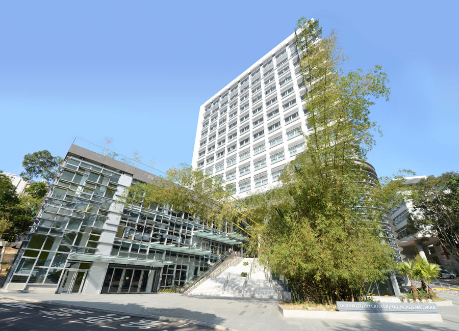
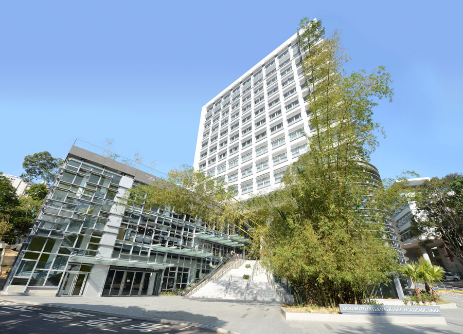

Abbas El Gamal
Hitachi America Professor
Department of Electrical Engineering,Stanford University
30,November,2025
[注册按钮，可链接到注册页面]The workshop is hosted by the Department of Information Engineering at The Chinese University of Hong Kong, and the IEEE Information Theory Society Hong Kong Chapter.
[More info...]
Hitachi America Professor
Department of Electrical Engineering,Stanford University
Vice-Chancellor Associate Professor
Department of Information Engineering, CUHK

Interim Head and Professor
Department of Mathematics, HKU

Presidential Chair Professor
School of Data Science, CUHK(SZ)

Associate Professor
Department of Computer Science, CityUHK
Professor
School of Computer and Communication Sciences, EPFL
Choh-Ming Li Professor
Department of Information Engineering, CUHK
[报告人姓名，单位]
[报告人姓名，单位]
[职位和单位]
[职位和单位]
Yasumoto International Academic Park (YIA) LT7,
The Chinese University of Hong Kong
Getting to Yasumoto International Academic Park (YIA), CUHK (PDF)
 
